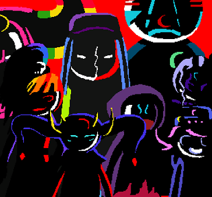

hey i think that clowns are pretty neat so i made this place. anyways if you want you can read my shit here.
huh looks like some clown made a discord server for adult fans or something. fans of what? me lmao?
— @z69clownboner420
right so first claiming that we as humans are the only intelligent life in the universe is both completely egocentric and scientifically disproven via the drake equation.  we are not the only life out there, and if so, it stands to reason that some of that life came to think like us.
the jubilites arose in one such race on the planet whimsiphae. like for real? bro idk but just bear me with me for a bit k? so there are these jubilites who figured out that when it comes down to it, respecting each other and letting each other be was some pretty important stuff.
kinda makes you think, right? if they did exist, and we put em up next to our own society, who'd be the ones to look more primitive and dumb?
we as humans have the ability to channel the same feelings as those beings of pure whimsy. the influence of whimsiphae hasn't ended, doesn't matter whether it's fake or not, it's something that we can create.
it isn't craziness that does this, well, at least not beyond the bullshit craziness that's in all of us, the will to have fun and make the world a better place. this was in us the entire time, we just need to bring it out.
the clownsona is something of an alternative interpretation of the self, meaning as much as is needed for the person using it. for those who adopt the jubilite name, it often represents the spirit of whimsy and happiness and shit and gives a context for that to come out.
it's like, kind of how a costume party lets you be someone you're not, but always wanted to. the clownsona represents the perfect version of oneself, free from the artificial constraints of those in power.
sure isn't a new thing that those with money want to control those without. setting up their silly rules and motherfucking bullshit ways of 'polite company' in an effort to circle jerk each other without making real change. screw that! just because it's a 'rule' doesn't mean that there's a moral right to doing it, espeically when it leads to so much harm and exploitation. know what else was made by the ruling class and called good and right? fucking slavery. fuck that noise. don the clownsona and throw off the made-up shakles of the world in the pursuit of happiness and whimsy for all.
with all the made-up bullshit of the world, we gotta make a constant effort to push back. you sit around all day not thinking about your principles, and before you know it you start to rot from the inside out. not cool. your inner clown needs nourishment just like your stomach does.
pranxis is the art of subverting this by actively letting out your more whimsical side. usually done for the greater good of others, it helps move the world forward and it'll let you have a laugh while you're doing it. and once you start to see past the fake as shit rules that the oppressors and the ruling class made up, there's so many ripe opportunities for you to get your clown on.
not every act of pranxis has to be super dramatic. could be as easy as hooking a fellow jubilite up with a joint in the middle of the street, and playing it off as pure audacity. or it could be the classic bucket over the door trap. it's all in good fun in the end, and though people might resist it at first, it's contagious! people will see your happiness and they will want to know more. and you can tell them all about the bullshit rules that the ultra-wealthy have made up for us.
take money for instance. yeah, we need it to live, right? let's us get food and shit. and that's good, and a good use of it! but the vast majority of wealth is locked up in the plots and money making schemes of the super elite. the best part is that the very concept of that huge amount of wealth is itself another fakery. that money doesn't exist. it's in investment accounts and wall street and shit. all it does is tick up and down, not really doing any good for anybody. and hey if you can do it, why not brush a little your way and use it to help others?
sure, you dont want to be stealing from folks. but for the super rich, whose wealth was built on the backs of slave labor and blood, it was never really theirs to begin with. really the entire concept of ownership on that level is a lie. made up by them to horde more and more at the cost of others.
neopets fall within the jubilite ideals of whimsy and just generally vibing with it so it is pretty much considered one of the better ways of showing one's commitment to 'em.
This website is an unofficial Psycholonials fansite created by dekarrin (NSFW Twitter Account) and is not affiliated with or endorsed by Andrew Hussie or The Silence Mill.
Sorry for any confusion, r/psycholonials.